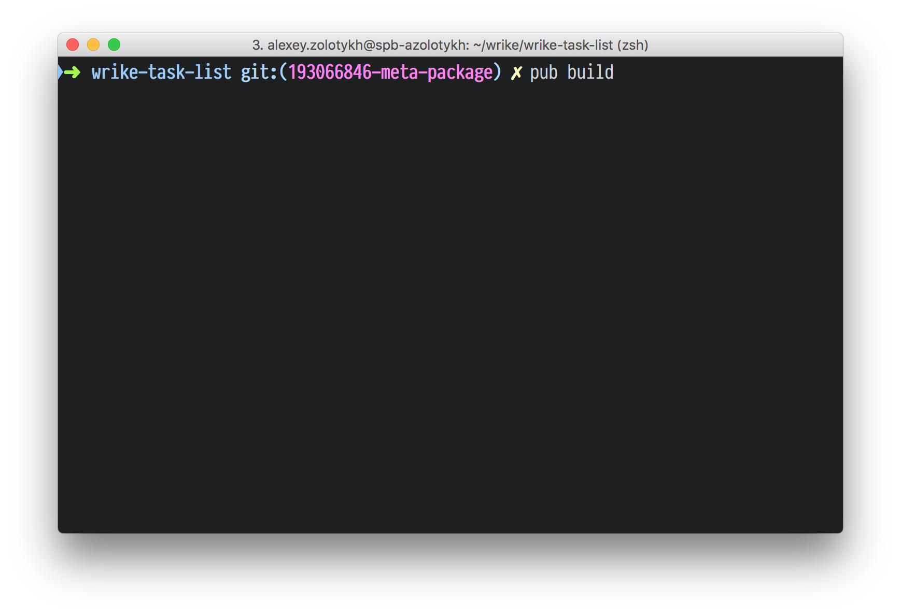

Путь, который проходит Dart-код от IDE до браузера
.
├── lib
│ ├── app_component.css
│ ├── app_component.dart
│ └── app_component.html
└── web
├── index.html
└── main.dart
Loading source assets...
Loading angular, sass_builder, dart_to_js_script_rewriter and test/pub_serve transformers...
Building demo3... (43.1s)
[Info from Dart2JS]:
Compiling demo3|web/main.dart...
[Info from Dart2JS]:
Took 0:00:09.032240 to compile demo3|web/main.dart.
Built 894 files to "build".
Loading source assets...
Loading angular, sass_builder, dart_to_js_script_rewriter and test/pub_serve transformers...
Building demo3... (43.1s)
[Info from Dart2JS]:
Compiling demo3|web/main.dart...
[Info from Dart2JS]:
Took 0:00:09.032240 to compile demo3|web/main.dart.
Built 894 files to "build".
5
+ 2
или 5 - 2 + 4
Разве этого не достаточно!?
Пакетный менеджер, иногда выполняет функцию сборщика
Dart → Pub transformers → Dart2JS → JS
Это как лоадеры в вебпаке
app_component.dart
@Component(
selector: 'my-app',
styleUrls: const ['app_component.css'],
templateUrl: 'app_component.html'
)
class AppComponent {
}
app_component.dart
@Component(
selector: 'my-app',
styleUrls: const ['app_component.css'],
templateUrl: 'app_component.html'
)
class AppComponent {
}
app_component.css
:host {
color: red;
}
app_components.css.shim.dart
const styles = const ['._nghost-%COMP% { color:red; }'];
app_component.css
:host {
color: red;
}
app_components.css.shim.dart
const styles = const ['._nghost-%COMP% { color:red; }'];
Hello world
В браузере
<style>._nghost-kpm-1 { color:red; }</style>
<my-app class="_nghost-kpm-1" id="">
Hello world
</my-app>
app_components.css.shim.dart
const styles = const ['._nghost-%COMP% { color:red; }'];
Hello world
В браузере
<style>._nghost-kpm-1 { color:red; }</style>
<my-app class="_nghost-kpm-1" id="">
Hello world
</my-app>
app_components.css.shim.dart
const styles = const ['._nghost-%COMP% { color:red; }'];
Hello world
app_component.template.dart
...
ComponentRef build() {
final HtmlElement parentRenderNode = initViewRoot(rootEl);
Text text = new Text('Hello world');
parentRenderNode.append(text);
}
...
AOT-компиляция
JIT-компиляция